KTransformers: Unleashing the Full Potential of CPU/GPU Hybrid Inference for MoE Models
SOSP ’25
gpu
llm
attention
memory
systems
KTransformers
Background & Motivation
Rise of Mixture-of-Experts (MoE)
- Models like DeepSeek-V3/R1 and Mixtral achieve state-of-the-art performance.
- Sparsity: Only a subset of experts activate per token.
- Challenge: Massive total parameter count makes local deployment difficult due to VRAM limits.
The Memory Wall in Local Deployment

- Storing the entire model in VRAM is often impossible for consumer/edge hardware.
- Hybrid Inference: A promising solution.
- GPU: Handles Attention and Shared Experts (compute-dense).
- CPU: Handles Routed Experts (capacity-dense, sparse access).
Workflow of Hybrid Inference
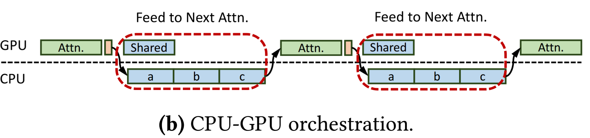
- Fiddler-style offloading:
- Hot layers (Attention) stay on GPU.
- Cold/Massive layers (Routed Experts) reside in host RAM.
- Data transfers over PCIe.
Bottleneck 1: Underutilized CPU Compute (Prefill)
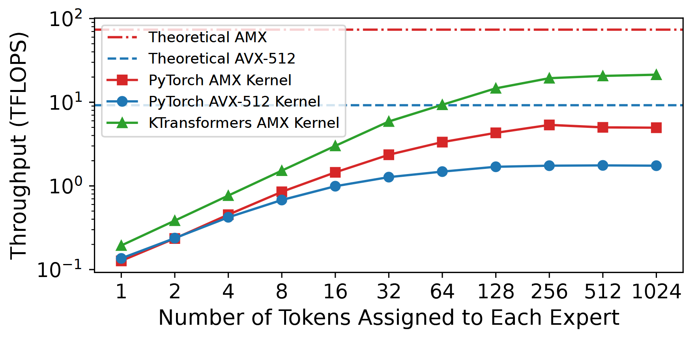
- Prefill phase processes thousands of tokens.
- Existing generic SIMD (AVX-512) is insufficient.
- Intel AMX exists but is poorly utilized (only 7% of peak) by current frameworks due to suboptimal memory layouts.
Bottleneck 2: Inefficient Coordination (Decode)
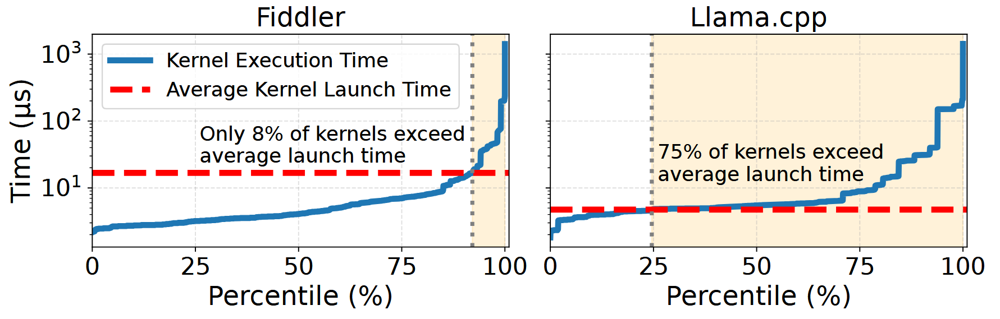
- Decode phase: Batch size is small (often 1).
- Overhead:
- Massive kernel launch overhead (73% of time in Fiddler).
- Frequent CPU-GPU synchronization.
- Strict sequential dependency prevents overlap.
Motivation Summary
- Compute: Need specialized kernels to unlock AMX potential on CPUs.
- Scheduling: Need asynchronous coordination to hide PCIe latency and launch overhead.
- Architecture: Need to break rigid dependencies to overlap CPU and GPU work.
System Design
KTransformers Overview
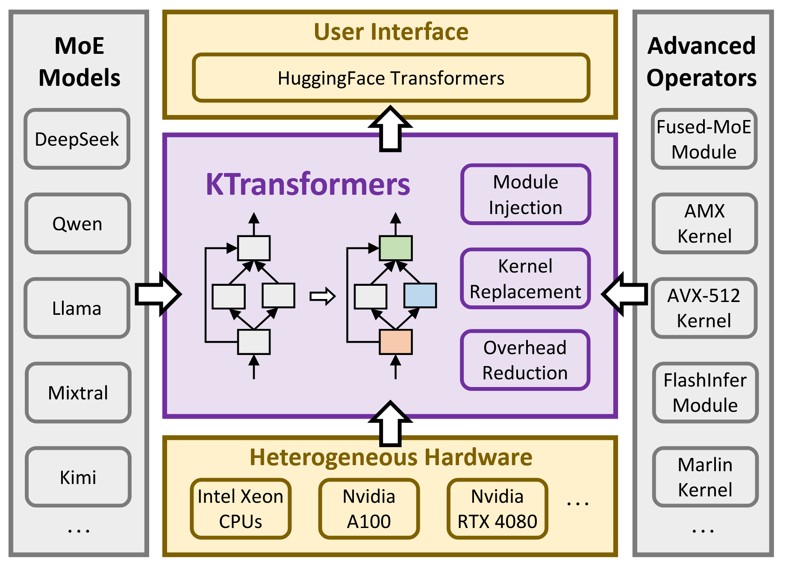
- Drop-in replacement for HuggingFace Transformers.
- Key Modules:
- Optimized AMX/AVX-512 Kernels.
- Asynchronous CPU-GPU Scheduler.
- Expert Deferral Mechanism.
Unleashing CPU Potential: AMX Kernels
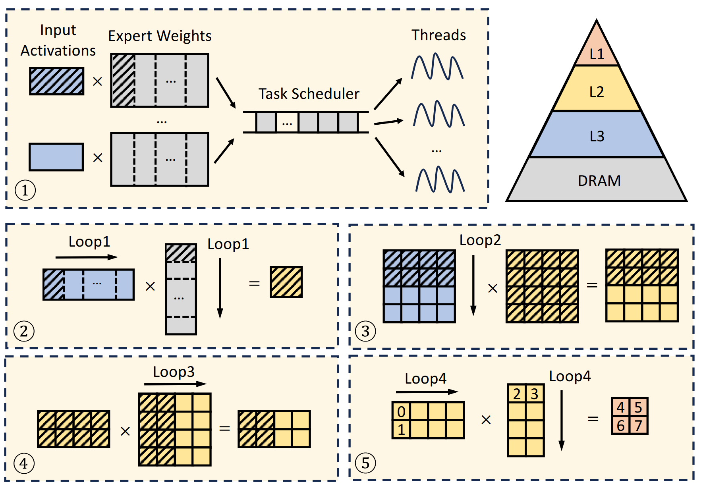
- Tiling-Aware Memory Layout:
- Pre-processes weights to align with AMX tile registers.
- Eliminates runtime transposition.
- Block-wise Quantization: 64-byte aligned for cache efficiency.
Adaptive Kernel Selection
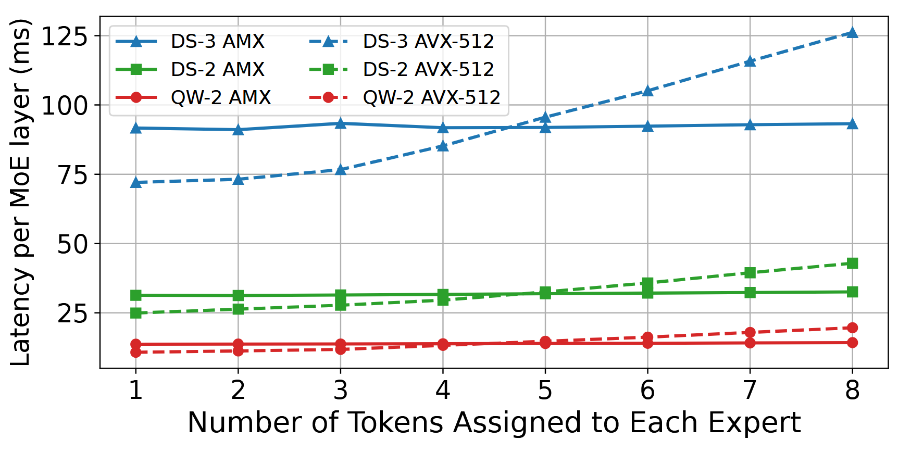
- AMX is powerful but has high startup overhead for small tasks.
- Strategy:
- Prefill (High Arithmetic Intensity): Use AMX.
- Decode (Low Arithmetic Intensity): Switch to lightweight AVX-512.
CPU-GPU Coordination
- Problem: Synchronization breaks CUDA Graphs.
- Solution:
- Encapsulate the entire decode phase in a single CUDA Graph.
- Use
cudaLaunchHostFuncto trigger CPU work from within the stream. - Eliminates kernel launch overhead.
NUMA-Aware Tensor Parallelism
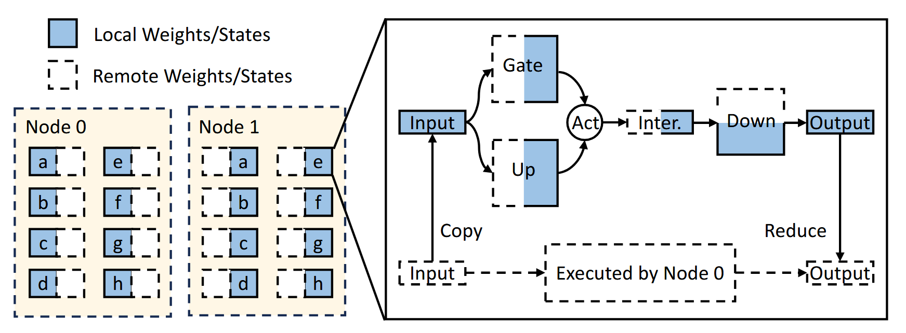
- Cross-socket memory access (NUMA) drastically reduces bandwidth.
- Strategy: Partition expert weights across sockets.
- Each CPU core accesses only local memory.
- Lightweight reduce-scatter combines results.
Innovation: Expert Deferral
- Observation: GPU is idle while waiting for CPU experts.
- Idea: Relax the strict dependency chain.
- Immediate Experts: Computed now, sent to next layer.
- Deferred Experts: Computation delayed to overlap with next layer’s attention.
Expert Deferral Workflow
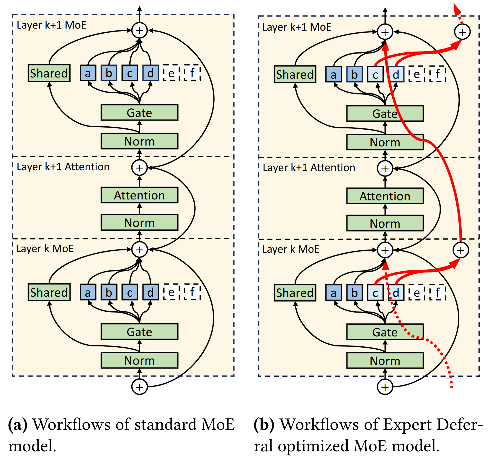
- (a) Standard: Serial execution.
- (b) Expert Deferral: Some experts (\(c, d\)) bypass the immediate attention layer and are injected later via residual connections.
Timeline Analysis with Deferral
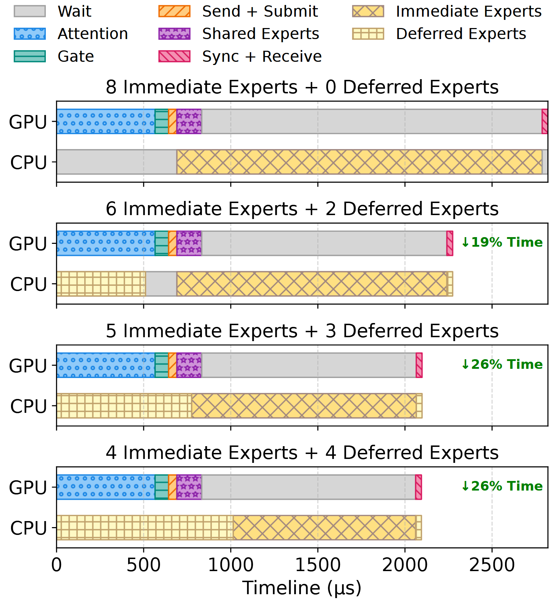
- Without deferral: Large CPU idle gaps.
- With deferral: CPU and GPU execution overlaps significantly.
- Increases CPU utilization from ~75% to ~100%.
Evaluation
Experimental Setup
- Hardware:
- Dual-socket Intel Xeon Platinum 8452Y.
- GPUs: NVIDIA A100 (40GB) & RTX 4080 (16GB).
- Models: DeepSeek-V2.5, DeepSeek-V3 (671B), Qwen2-57B.
- Baselines: Fiddler, Llama.cpp.
Prefill Performance
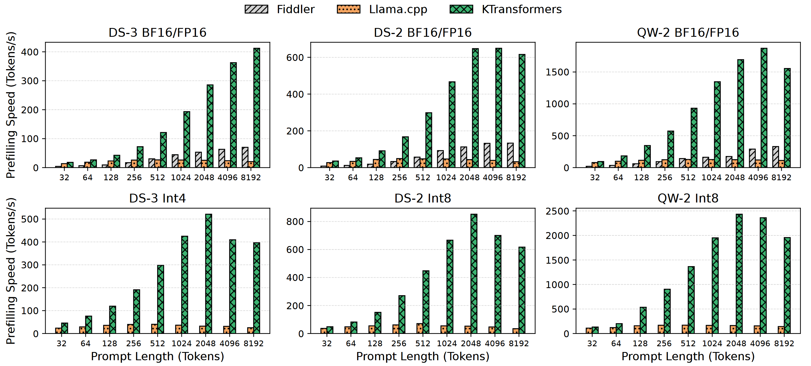
- 4.62x – 19.74x speedup over baselines.
- Dominance due to AMX-optimized kernels and better memory layout.
Decode Performance
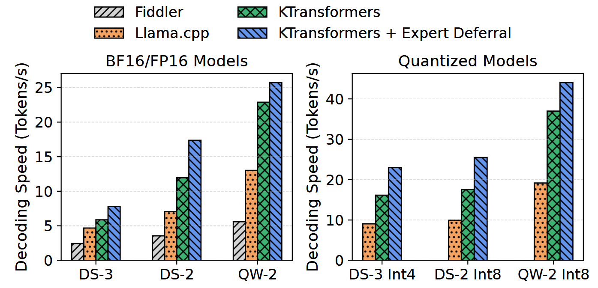
- 1.25x – 4.09x speedup over baselines.
- Driven by CUDA Graph optimizations and Expert Deferral.
- Capable of running DeepSeek-V3 on local hardware.
Impact of Expert Deferral on Accuracy
Table 2: Accuracy on various benchmarks
| Model | Setting | HumanEval | MBPP | GSM8K |
|---|---|---|---|---|
| DS-3 | Base (8+0) | 83.0 | 71.2 | 94.8 |
| DS-3 | Deferral (2+6) | 83.0 | 70.2 | 95.2 |
- Minimal accuracy variation (< 0.5% drop on average).
- Robustness due to residual connections in Transformers.